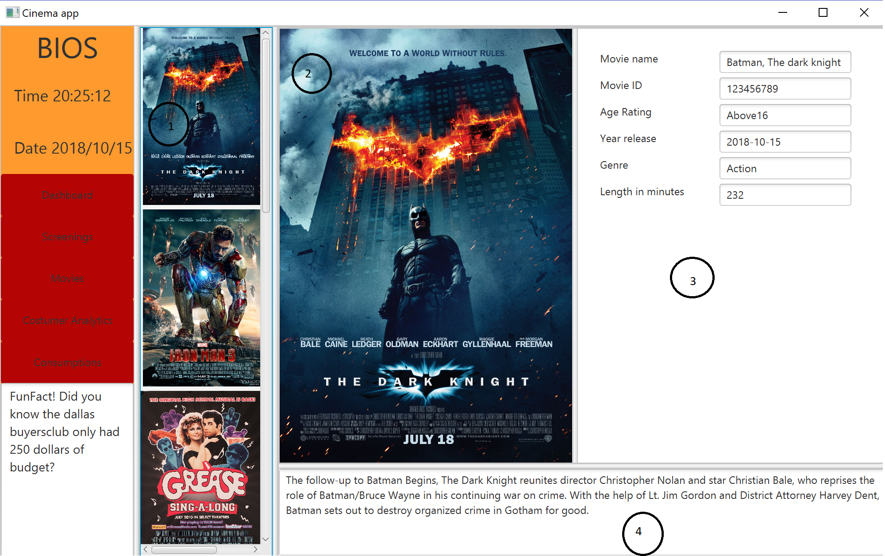

Voor het vak Object oriënted analysis and design moesten we een kleine functionele java app maken in 7 weken waar we ons voornamelijk moesten focussen op het leren van UML en de structuur van het programma. Het was een leuk project om te maken met een team van 3, Hierdoor konden we goed de taken verdelen en hebben we het groepsgedeelde afgesloten met een 10.
De app bestond uit een aantal schermen; Het startscherm, de catalogus, het klantenscherm en een scherm die het overzicht geeft van alle ruimtes die films afspelen op bepaalde tijden. Het doel van dit systeem was een makkelijk overzicht voor een manager van een bioscoop met als vooruitzicht een bruikbaarheid voor elke bioscoop. We hadden ook nog een paar ideetjes voor uitbreidingen zoals een scherm die de verkoop en catalogus van comsumpties bijhield maar daar hadden we geen tijd meer voor.